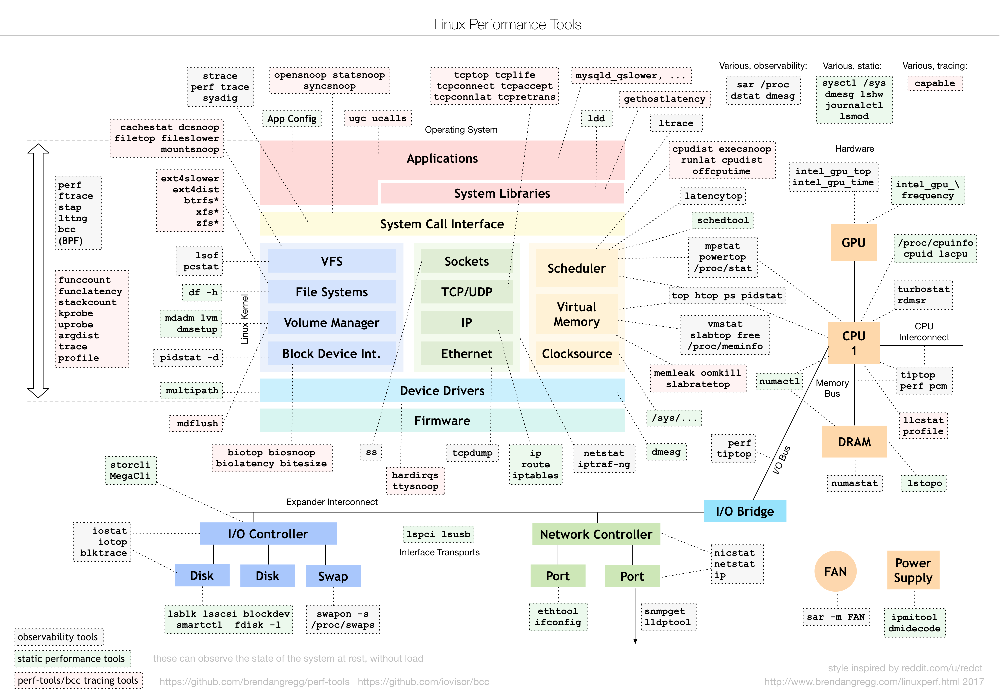
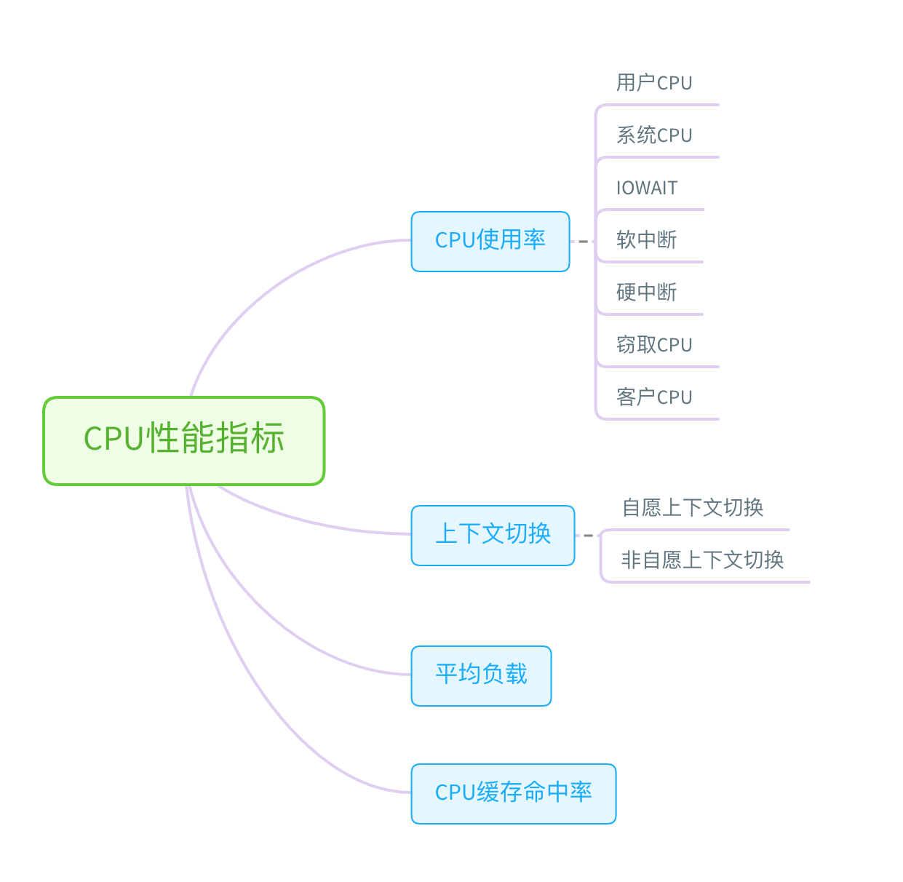
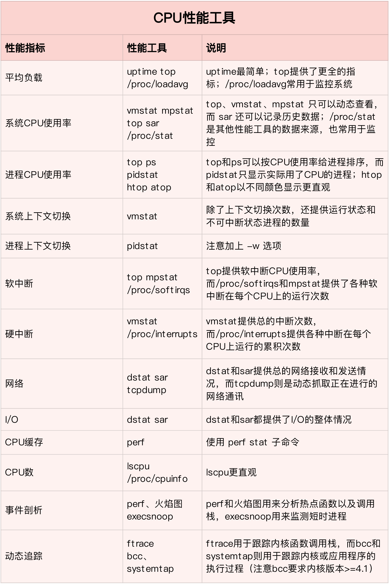
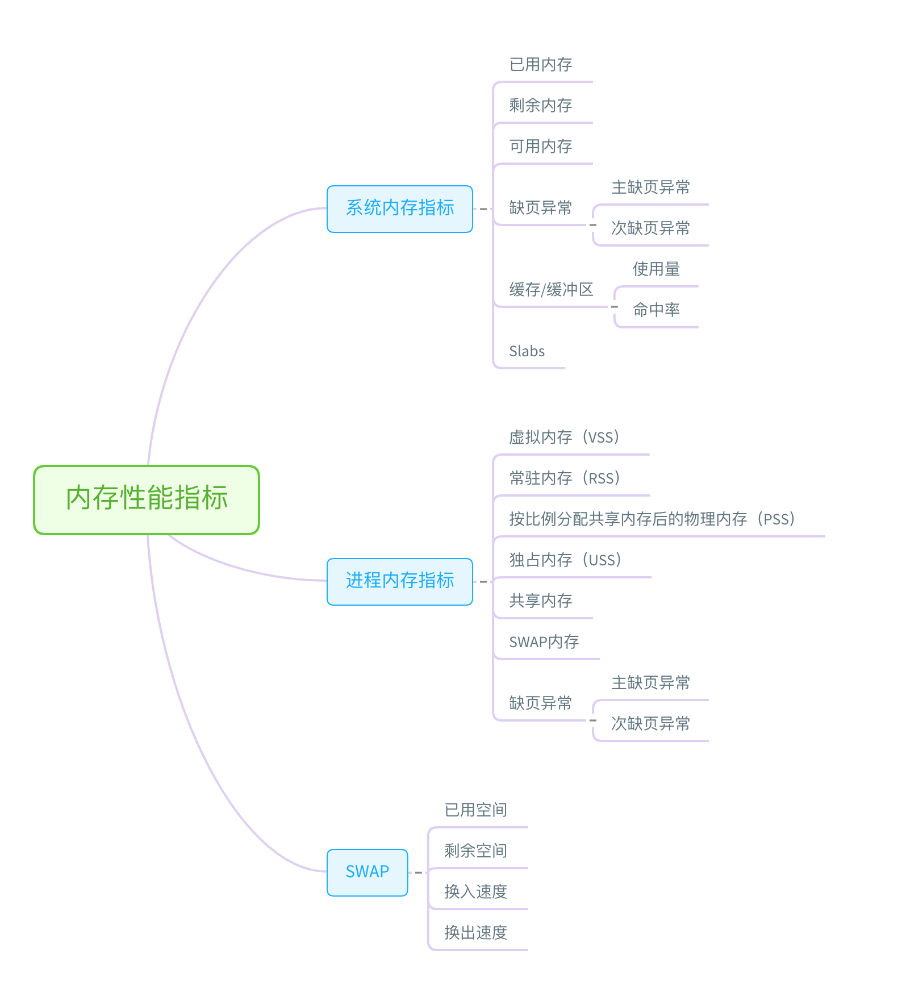
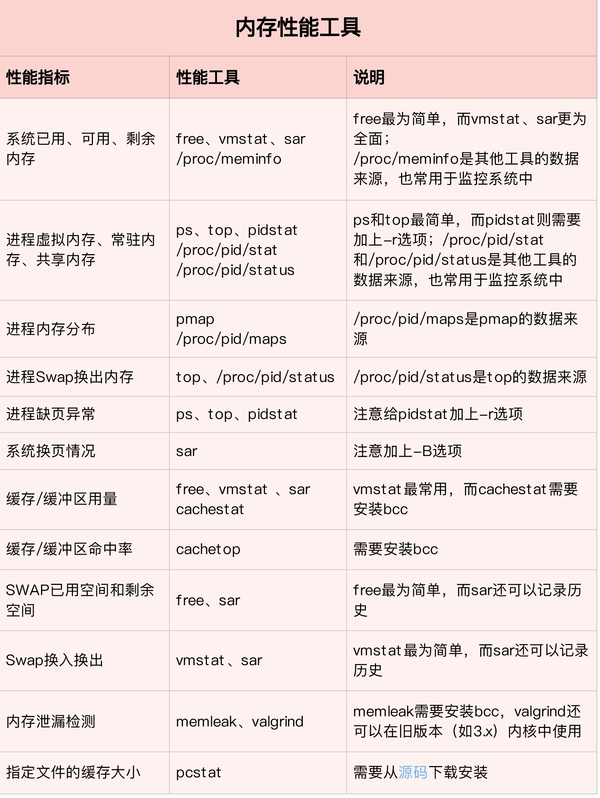
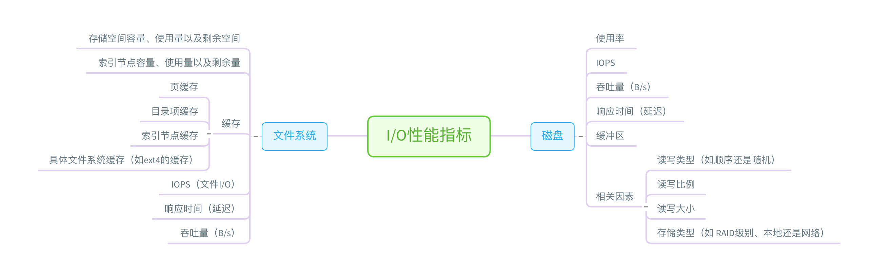
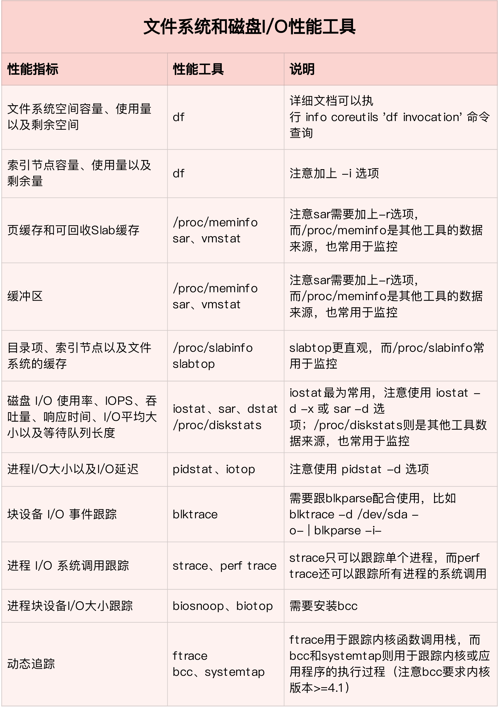
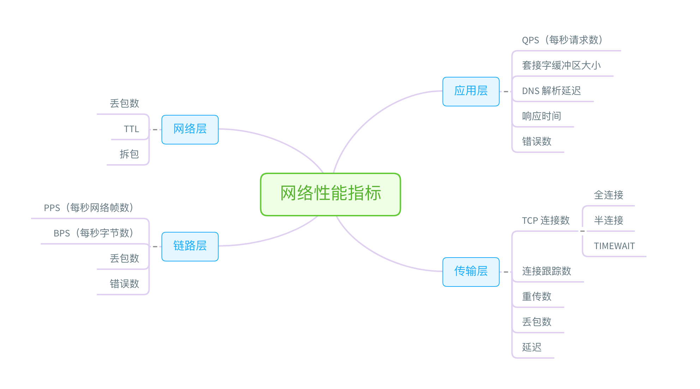
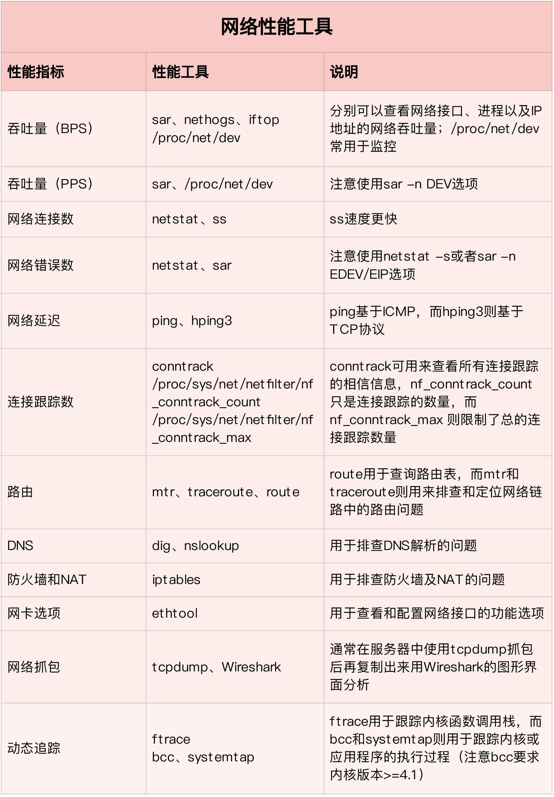
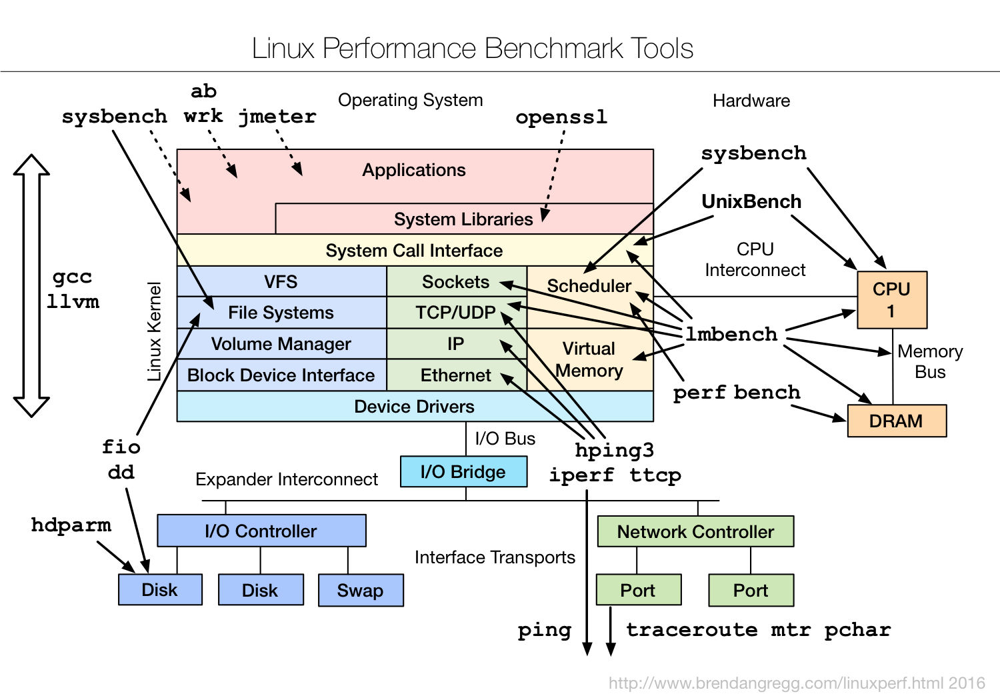

性能工具速查
info 可以理解为 man 的详细版本，提供了诸如节点跳转等更强大的功能。相对来说，man 的输出比较简洁，而 info 的输出更详细。所以，我们通常使用 man 来查询工具的使用方法，只有在 man 的输出不太好理解时，才会再去参考 info 文档。
- 有些工具不需要额外安装，就可以直接使用，比如内核的 /proc 文件系统；
- 而有些工具，则需要安装额外的软件包，比如 sar、pidstat、iostat 等。
所以，在选择性能工具时，除了要考虑性能指标这个目的外，还要结合待分析的环境来综合考虑。比如，实际环境是否允许安装软件包，是否需要新的内核版本等。

还是从性能指标出发，根据性能指标的不同，将性能工具划分为不同类型。比如，最常见的就是可以根据 CPU、内存、磁盘 I/O 以及网络的各类性能指标，将这些工具进行分类。
CPU 性能工具


内存性能工具


磁盘 I/O 性能工具


网络性能工具


基准测试工具
- 在文件系统和磁盘 I/O 模块中，我们使用 fio 工具，测试了磁盘 I/O 的性能。
- 在网络模块中，我们使用 iperf、pktgen 等，测试了网络的性能。
- 而在很多基于 Nginx 的案例中，我们则使用 ab、wrk 等，测试 Nginx 应用的性能。
下面这张图，是 Brendan Gregg 整理的 Linux 基准测试工具图谱，你可以保存下来，在需要时参考。
